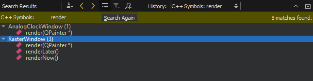

Find symbols
You can search for references to a particular symbol or search for symbols with a name that matches a pattern.
Find references to a symbol
To find instances of a particular symbol in your Qt C++ project:
- Place the cursor on the symbol in the editor.
- Go to Tools > C++ > Find References to Symbol Under Cursor, or press Ctrl+Shift+U.

Color-code access type
To view the same results color-coded according to the access type, such as read, write, or declaration, go to Tools > C++ > Find References with Access Type.
Find symbols that match search criteria
Go to Edit > Find/Replace > Advanced Find and select C++ Symbols to search for classes, functions, enums, and declarations (including type aliases) either from files listed as part of the project or from all files that are used by the code, such as include files.

Qt Creator searches from the following locations:
- Files listed as a part of the project
- Files directly used by the project files (for example, generated files)
- Header files of used frameworks and libraries
View found symbols
Search Results View shows the location and number of search hits in the current project.

See also How To: Search and Search Results View.